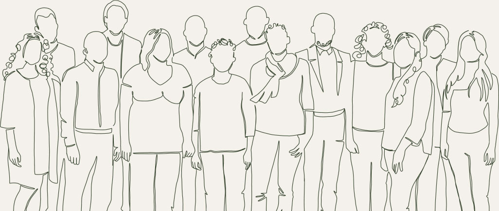

Hi, I'm Ansh (Ash), a BA2 student, currently the Co-Lead of EDI Fora, and an Events Coordinator for MSSA IDesign. Through these roles, I've worked with students across different backgrounds, year groups, and interests, helping create a more inclusive and engaging environment; and now I am running for MSSA Secretary/Inclusions Officer, and I'm excited to contribute more actively and apply my leadership skills to a wider community.
As an active member of MSA, I've seen how strong MSSA is as a platform for connection, collaboration, and student engagement. Building on the momentum of the previous committees, I want to help it grow into a space where every student feels welcomed, represented, and encouraged to take part.
I am approachable, proactive, and committed to representing student voices. Through EDI Fora and MSSA IDesign, I've developed strong skills in inclusion, communication, and community-building; and if you know me, you know I'm always up for a conversation. I want to help create an MSSA that works for everyone, not just a few.
Through being leader of MSSA Climate Action Group, as well as creative director of MSSA photography, I am confident that I can benefit the role of MSSA Chair in every scale, for the individual student, for our community, and for how we present ourselves and collaborate with the world beyond the school. If you have met me, you know I am outgoing and friendly; always happy to talk and help you. As chair, some of my current goals are to:
Together, we want MSSA to be more connected and more ambitious in what it offers students. Our aim is to strengthen the sense of community within MSA while also expanding the opportunities, networks, and collaborations available through student life.
We believe MSSA should not only bring people together socially, but also act as a stronger platform for participation, visibility, and growth. Connecting students across year groups, disciplines, and backgrounds, while opening clearer pathways to creative collaboration, industry engagement, and wider opportunity.
Our shared vision is for an MSSA that feels welcoming and representative, but also active, outward-looking, and genuinely valuable: a society that helps students connect, contribute, and grow both within the school and beyond it.
Vote Ash & Sebastian
for a more connected and ambitious MSSA.
